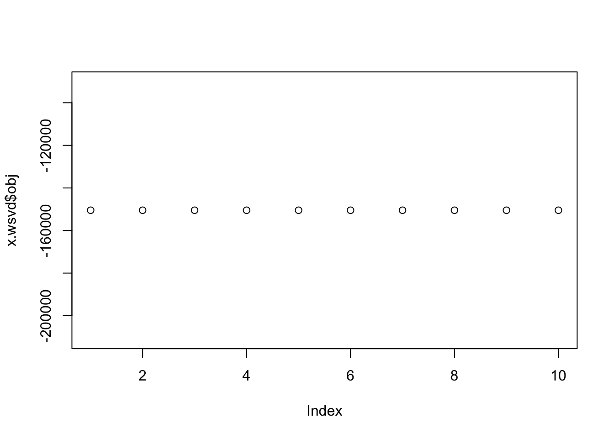
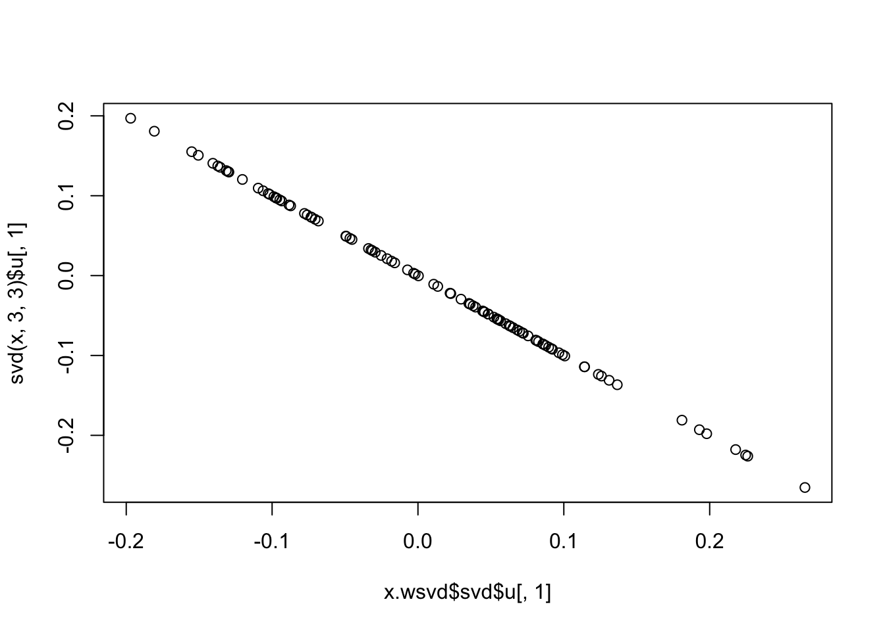
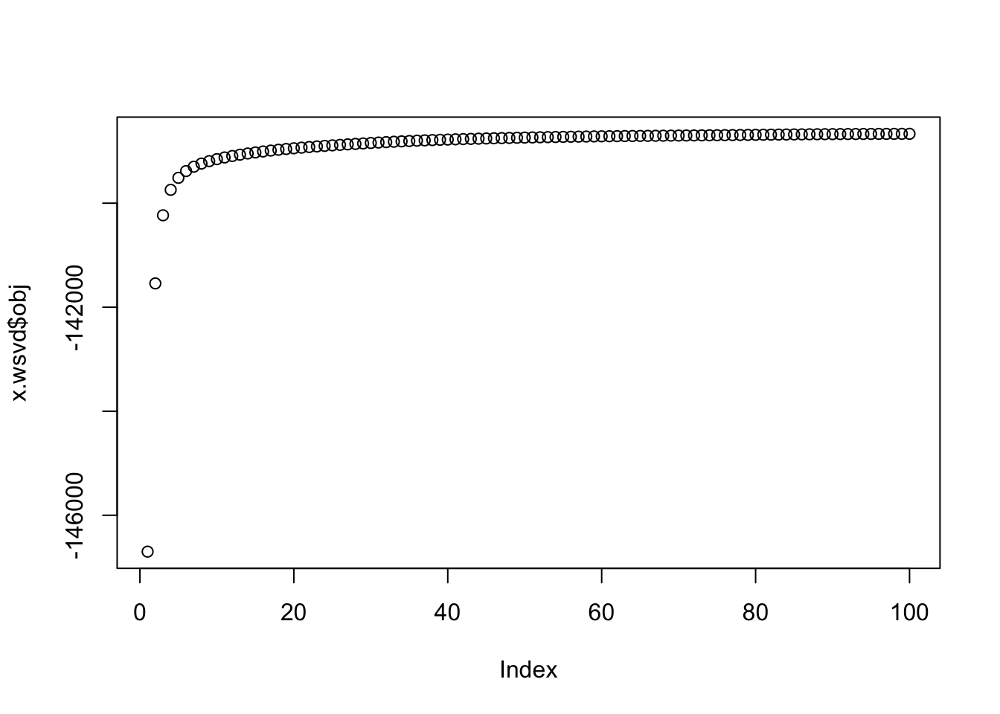

wSVD
stephens999
2018-06-28
Last updated: 2018-07-14
workflowr checks: (Click a bullet for more information)-
✔ R Markdown file: up-to-date
Great! Since the R Markdown file has been committed to the Git repository, you know the exact version of the code that produced these results.
-
✔ Environment: empty
Great job! The global environment was empty. Objects defined in the global environment can affect the analysis in your R Markdown file in unknown ways. For reproduciblity it’s best to always run the code in an empty environment.
-
✔ Seed:
set.seed(12345)The command
set.seed(12345)was run prior to running the code in the R Markdown file. Setting a seed ensures that any results that rely on randomness, e.g. subsampling or permutations, are reproducible. -
✔ Session information: recorded
Great job! Recording the operating system, R version, and package versions is critical for reproducibility.
-
Great! You are using Git for version control. Tracking code development and connecting the code version to the results is critical for reproducibility. The version displayed above was the version of the Git repository at the time these results were generated.✔ Repository version: 6abd106
Note that you need to be careful to ensure that all relevant files for the analysis have been committed to Git prior to generating the results (you can usewflow_publishorwflow_git_commit). workflowr only checks the R Markdown file, but you know if there are other scripts or data files that it depends on. Below is the status of the Git repository when the results were generated:
Note that any generated files, e.g. HTML, png, CSS, etc., are not included in this status report because it is ok for generated content to have uncommitted changes.Ignored files: Ignored: .DS_Store Ignored: .Rhistory Ignored: .Rproj.user/ Ignored: analysis/.RData Ignored: analysis/.Rhistory Ignored: analysis/ALStruct_cache/ Ignored: data/.Rhistory Ignored: docs/figure/.DS_Store Untracked files: Untracked: .dropbox Untracked: Icon Untracked: _workflowr.yml Untracked: analysis/GTEX-cogaps.Rmd Untracked: analysis/SPCAvRP.rmd Untracked: analysis/eQTL.perm.rand.pdf Untracked: analysis/ieQTL.perm.rand.pdf Untracked: analysis/mash_bhat_z.Rmd Untracked: analysis/mash_ieqtl_permutations.Rmd Untracked: analysis/sc_bimodal.Rmd Untracked: analysis/susie_example.Rmd Untracked: analysis/test_sparse.Rmd Untracked: analysis/z.txt Untracked: code/multivariate_testfuncs.R Untracked: data/4matthew/ Untracked: data/4matthew2/ Untracked: data/E-MTAB-2805.processed.1/ Untracked: data/ENSG00000156738.Sim_Y2.RDS Untracked: data/GDS5363_full.soft.gz Untracked: data/GSE41265_allGenesTPM.txt Untracked: data/Muscle_Skeletal.ACTN3.pm1Mb.RDS Untracked: data/Thyroid.FMO2.pm1Mb.RDS Untracked: data/bmass.HaemgenRBC2016.MAF01.Vs2.MergedDataSources.200kRanSubset.ChrBPMAFMarkerZScores.vs1.txt.gz Untracked: data/bmass.HaemgenRBC2016.Vs2.NewSNPs.ZScores.hclust.vs1.txt Untracked: data/bmass.HaemgenRBC2016.Vs2.PreviousSNPs.ZScores.hclust.vs1.txt Untracked: data/finemap_data/fmo2.sim/b.txt Untracked: data/finemap_data/fmo2.sim/dap_out.txt Untracked: data/finemap_data/fmo2.sim/dap_out2.txt Untracked: data/finemap_data/fmo2.sim/dap_out2_snp.txt Untracked: data/finemap_data/fmo2.sim/dap_out_snp.txt Untracked: data/finemap_data/fmo2.sim/data Untracked: data/finemap_data/fmo2.sim/fmo2.sim.config Untracked: data/finemap_data/fmo2.sim/fmo2.sim.k Untracked: data/finemap_data/fmo2.sim/fmo2.sim.k4.config Untracked: data/finemap_data/fmo2.sim/fmo2.sim.k4.snp Untracked: data/finemap_data/fmo2.sim/fmo2.sim.ld Untracked: data/finemap_data/fmo2.sim/fmo2.sim.snp Untracked: data/finemap_data/fmo2.sim/fmo2.sim.z Untracked: data/finemap_data/fmo2.sim/pos.txt Untracked: data/logm.csv Untracked: data/m.cd.RDS Untracked: data/m.cdu.old.RDS Untracked: data/m.new.cd.RDS Untracked: data/m.old.cd.RDS Untracked: data/mainbib.bib.old Untracked: data/mat.csv Untracked: data/mat.txt Untracked: data/mat_new.csv Untracked: data/paintor_data/ Untracked: data/temp.txt Untracked: data/y.txt Untracked: data/y_f.txt Untracked: docs/figure/eigen.Rmd/ Untracked: docs/figure/fmo2.sim.Rmd/ Untracked: docs/figure/newVB.elbo.Rmd/ Untracked: docs/figure/rbc_zscore_mash2.Rmd/ Untracked: docs/figure/rbc_zscore_mash2_analysis.Rmd/ Untracked: docs/figure/rbc_zscores.Rmd/ Untracked: docs/trend_files/ Untracked: docs/z.txt Untracked: explore_udi.R Untracked: output/fit.varbvs.RDS Untracked: output/glmnet.fit.RDS Untracked: output/test.bv.txt Untracked: output/test.gamma.txt Untracked: output/test.hyp.txt Untracked: output/test.log.txt Untracked: output/test.param.txt Untracked: output/test2.bv.txt Untracked: output/test2.gamma.txt Untracked: output/test2.hyp.txt Untracked: output/test2.log.txt Untracked: output/test2.param.txt Untracked: output/test3.bv.txt Untracked: output/test3.gamma.txt Untracked: output/test3.hyp.txt Untracked: output/test3.log.txt Untracked: output/test3.param.txt Untracked: output/test4.bv.txt Untracked: output/test4.gamma.txt Untracked: output/test4.hyp.txt Untracked: output/test4.log.txt Untracked: output/test4.param.txt Untracked: output/test5.bv.txt Untracked: output/test5.gamma.txt Untracked: output/test5.hyp.txt Untracked: output/test5.log.txt Untracked: output/test5.param.txt Unstaged changes: Modified: analysis/_site.yml Deleted: analysis/chunks.R Modified: analysis/eigen.Rmd Modified: analysis/fmo2.sim.Rmd Modified: analysis/newVB.Rmd
Expand here to see past versions:
| File | Version | Author | Date | Message |
|---|---|---|---|---|
| Rmd | 6abd106 | stephens999 | 2018-07-14 | workflowr::wflow_publish(“analysis/wSVD.Rmd”) |
| html | 695703e | stephens999 | 2018-07-14 | Build site. |
| Rmd | d007ead | stephens999 | 2018-07-14 | workflowr::wflow_publish(“analysis/wSVD.Rmd”) |
| html | e79677d | stephens999 | 2018-07-13 | Build site. |
| Rmd | ece36e8 | stephens999 | 2018-07-13 | workflowr::wflow_publish(“analysis/wSVD.Rmd”) |
Introduction
Motivated by the desire to apply SVD and related methods to non-gaussian data (eg single cell data), I want to suggest investigating “weighted” versions of SVD that allows each observation to have its own measurement-error variance (in addition to any common variance). We already have this kind of idea in flash and mash, but methods like softImpute and svd are potentially more scalable, and so it would be nice to implement fast general versions of these.
The working model “rank k” model is \[X = UDV' + Z + E\] where \(X\), \(Z\) and \(E\) are all \(n \times p\) matrices, and \(D\) is a \(k \times k\) diagonal matrix. The elements of \(E\) are iid \[E_{ij} \sim N(0,\sigma^2=1/\tau)\] and \[Z_{ij} \sim N(0,s^2_{ij})\] where \(s_{ij}\) are known.
Note: in softImpute (alternating least squares; ALS version) they replace \(UDV'\) by \(AB'\), but the basic idea is the same. Also in softImpute they introduce an L2 penalty, which is a nice feature to have, and which I think may not complicate things much here. (to be checked!)
Given \(Z\) we note that the mle for \(U,D,V\) is given by the SVD of (\(X-Z\)). Following the usual EM idea, each iteration we can replace \(Z\) with its expectation \(\bar{Z} = E(Z | U,D,V)\) where \(U,D,V\) are the current values of these parameters. Then the M step becomes running SVD on \(X-\bar{Z}\).
Given \(U,D,V\) define residuals \(R= X-UDV\). Then from the model \(R_{ij} | Z \sim N(Z_{ij}, \sigma^2)\). Then from standard Bayesian analysis of Gaussians we have: \[Z_{ij} | R \sim N(\mu_1,1/\tau_1)\] where \[\mu_1 = \tau/\tau_1 R_{ij}\] \[\tau_1 = \tau + 1/s_{ij}^2\].
In particular the conditional mean of \(Z\) needed for EM is: \[\bar{Z}_{ij}= \tau/\tau_1 R_{ij}\].
Note that in the special case \(s_{ij}=\Inf\), which is like \(X_{ij}\) is “missing”, this gives \(\bar{Z}_{ij} = R_{ij}\), and when we plug that in to get a “new” value of \(R\) we get \(R_{ij} = X_{ij}-\bar{Z}_{ij} = (UDV)_{ij}\). That is, each iteration
If we look in the softImpute code this is exactly what they use to deal with missing data. For example, line 49 of simpute.als.R is
xfill[xnas] = (U %*% (Dsq * t(V)))[xnas].
Idea
Basically my idea is that we should be able to modify the softImpute code by replacing this line (and similar lines involving xfill) with something based on the above derivation…One advantage of this is that softImpute already deals with ridge penalty, and is well documented and fast…
Alternatively we could just implement it ourselves as below without the ridge penalty…
Code
I started coding an EM algorithm that imputes \(Z\) each iteration. I haven’t tested it, so there may be bugs … but the objective seems to increase. This code may or may not be useful to build on.
wSVD = function(x,s,k,niter=100,tau=NULL){
if(is.null(tau)){ #for now just estimate tau by residual variance from fit of first k svd
x.svd = svd(x,k,k)
tau = 1/mean((x - x.svd$u %*% diag(x.svd$d[1:k]) %*% t(x.svd$v))^2)
}
n = nrow(x)
p = ncol(x)
z = matrix(0,nrow=n,ncol=p)
sigma2 = rep(0,niter)
obj = rep(0,niter)
for(i in 1:niter){
x.svd = svd(x-z,k,k) # could maybe replace this with a faster method to get top k pcs?
R = x - x.svd$u %*% diag(x.svd$d[1:k]) %*% t(x.svd$v)
tau1 = tau + 1/s^2
z = (tau/tau1)*R
sigma2[i] = 1/tau
obj[i] = sum(dnorm(R, 0, sqrt(s^2+(1/tau)), log=TRUE))
}
return(list(svd = x.svd,sigma2=sigma2,obj=obj))
}This example just runs it on constant \(s\), so it should match regular svd. I ran it with two different values of \(\tau\), but I don’t think \(\tau\) affects the mle here…
set.seed(1)
n = 100
p = 1000
s = matrix(1,nrow=n,ncol=p)
x = matrix(rnorm(n*p,0,s),nrow=n,ncol=p)
x.wsvd = wSVD(x,s,3,10,1)
plot(x.wsvd$obj)
Expand here to see past versions of unnamed-chunk-2-1.png:
| Version | Author | Date |
|---|---|---|
| 695703e | stephens999 | 2018-07-14 |
x.wsvd2 = wSVD(x,s,3,10,1e6)
plot(x.wsvd2$svd$u[,1],svd(x,3,3)$u[,1])
Expand here to see past versions of unnamed-chunk-2-2.png:
| Version | Author | Date |
|---|---|---|
| 695703e | stephens999 | 2018-07-14 |
plot(x.wsvd$svd$u[,1],svd(x,3,3)$u[,1])
Expand here to see past versions of unnamed-chunk-2-3.png:
| Version | Author | Date |
|---|---|---|
| 695703e | stephens999 | 2018-07-14 |
Now this version is non-constant variance. At least the objective is increasing…
s = matrix(rgamma(n*p,1,1),nrow=n,ncol=p)
x = matrix(rnorm(n*p,0,s),nrow=n,ncol=p)
x.wsvd = wSVD(x,s,30,100)
plot(x.wsvd$obj)
Expand here to see past versions of unnamed-chunk-3-1.png:
| Version | Author | Date |
|---|---|---|
| 695703e | stephens999 | 2018-07-14 |
Applying to Poisson data
Here is outline of how we might apply this to Poisson data.
Let \(Y_{ij} \sim Poi(\mu_{ij})\) be observations. Let \(m_{ij}\) be a “current fitted value” for \(\mu_{ij}\), for example it could be the current value of \(Y_{ij} - Z_{ij}\) if \(Z_{ij}\) where \(Z_{ij}\) is the estimated “measurement error” in the above. Or for initialization \(m_{ij}\) could be the mean of \(X_{i\cdot}\) if \(j\) indexes genes.
Basically the idea is to do a Taylor series expansion of the Poisson likelihood about \(m_{ij}\). This leads to - set \(X_{ij} = \log(m_{ij}) + (Y_{ij}-m_{ij})/m_{ij}\) - set \(s^2_{ij} = 1/m_{ij}\) which we could apply wSVD to. And then repeat…
Other issues
I think there is something of a literature on wSVD, but not much implemented. Would be good to look further.
We would want to estimate the residual precision \(\tau\) too. I believe there is a EM update for that based on computing expected squared residuals (which will involve second moment of \(Z_{ij}\), which is available).
It would be nice if we could estimate the ridge penalty in softImpute by maximum likelihood/variational approximation (as in flash/PEER) rather than having to do cross-validation.
Session information
sessionInfo()R version 3.3.2 (2016-10-31)
Platform: x86_64-apple-darwin13.4.0 (64-bit)
Running under: OS X El Capitan 10.11.6
locale:
[1] en_US.UTF-8/en_US.UTF-8/en_US.UTF-8/C/en_US.UTF-8/en_US.UTF-8
attached base packages:
[1] stats graphics grDevices utils datasets methods base
loaded via a namespace (and not attached):
[1] workflowr_1.0.1.9001 Rcpp_0.12.16 digest_0.6.15
[4] rprojroot_1.3-2 R.methodsS3_1.7.1 backports_1.1.2
[7] git2r_0.21.0 magrittr_1.5 evaluate_0.10.1
[10] stringi_1.1.7 whisker_0.3-2 R.oo_1.22.0
[13] R.utils_2.6.0 rmarkdown_1.9 tools_3.3.2
[16] stringr_1.3.0 yaml_2.1.18 htmltools_0.3.6
[19] knitr_1.20
This reproducible R Markdown analysis was created with workflowr 1.0.1.9001